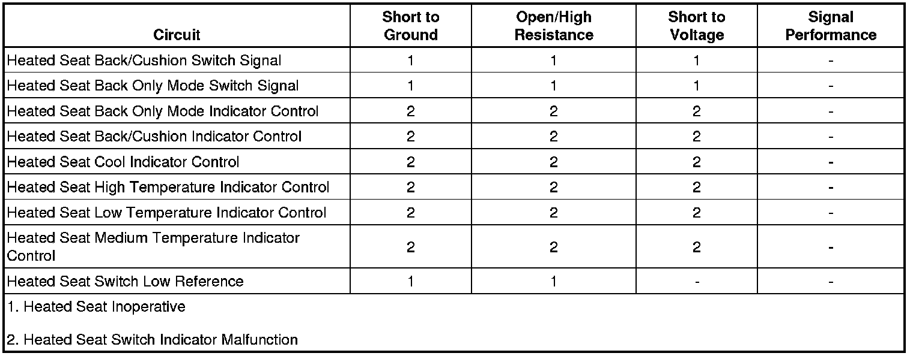

Heated Seat Inoperative
Heated Seat Inoperative
Diagnostic Instructions
* Perform the Diagnostic System Check - Vehicle (Initial Inspection and Diagnostic Overview) prior to using this diagnostic procedure.
* Review Strategy Based Diagnosis (Initial Inspection and Diagnostic Overview) for an overview of the diagnostic approach.
* Diagnostic Procedure Instructions (Initial Inspection and Diagnostic Overview)provides an overview of each diagnostic category.
Diagnostic Fault Information

Circuit/System Description
The driver and front passenger heated seats are controlled by separate heated seat switches. The switches are located on the door panels. When a heated seat switch is pressed, ground is momentarily applied through the switch contacts and the switch signal circuit to the door module. In response to this signal, the door module sends a message via the low speed GMLAN serial data line to the memory seat module (MSM) indicating the heat seat request. The door module then applies voltage through the appropriate indicator control circuits to the heated seat switch illuminating the appropriate indicators.
Reference Information
Schematic Reference
Heated/Cooled Seat Schematics ([1][2]Electrical Diagrams)
Connector End View Reference
Component Connector End Views (Connector Views)
Description and Operation
Heated Seats Description and Operation (Description and Operation)
Electrical Information Reference
* Circuit Testing (Component Tests and General Diagnostics)
* Connector Repairs (Component Tests and General Diagnostics)
* Testing for Intermittent Conditions and Poor Connections (Component Tests and General Diagnostics)
* Wiring Repairs (Component Tests and General Diagnostics)
Scan Tool Reference
Control Module References (Programming and Relearning)
Circuit/System Testing
1. Ignition ON, observe the following scan tool parameters in the appropriate driver or passenger door switch data list while pressing and releasing the appropriate switch. The readings should change between ACTIVE and INACTIVE.
* Seat Back Heat Mode Sw.
* Seat Heat Mode Sw.
• If not the specified value, refer to Heated Seat Switch Malfunction.
2. If the switches operate normally, replace the appropriate door control module.
Component Testing
Heated Seat Switch Malfunction
1. Ignition OFF, disconnect the X4 harness connector at the appropriate door module.
2. Test for infinite resistance between the following switch signal circuits and the low reference circuit terminal 4 with the switch in the open position.
* Terminal 6 heated seat back cushion heat switch signal
* Terminal 7 heated seat back only mode switch signal
• If less than the specified range for either of the tests, replace the heated seat switch.
3. Test for less than 2 ohms between the following switch signal circuits and the low reference circuit terminal 4 with the switch in the closed position.
* Terminal 6 heated seat back cushion heat switch signal
* Terminal 7 heated seat back only mode switch signal
• If greater than the specified range for either of the tests, replace the heated seat switch.
Repair Instructions
Perform the Diagnostic Repair Verification (Verification Tests) after completing the diagnostic procedure.
* Front Seat Heater Switch Replacement (Service and Repair)
* Control Module References (Programming and Relearning)for DDM or PDM replacement, setup, and programming